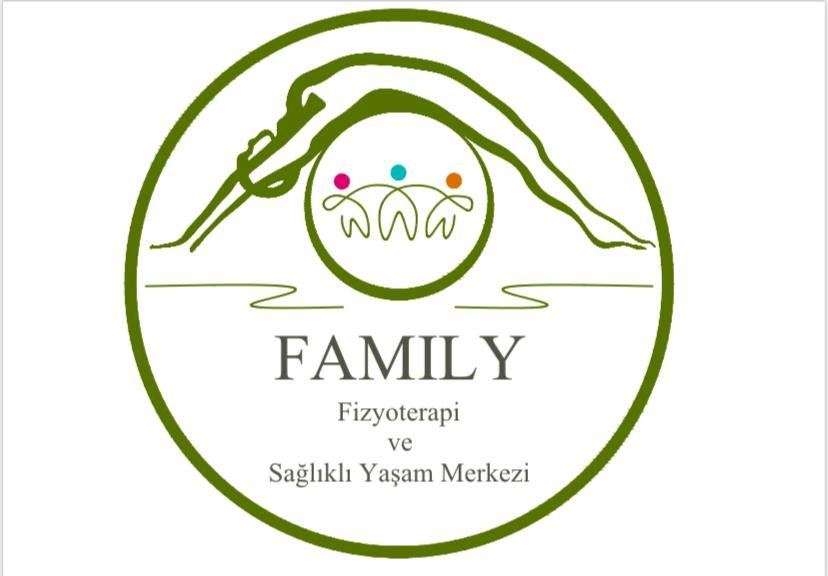
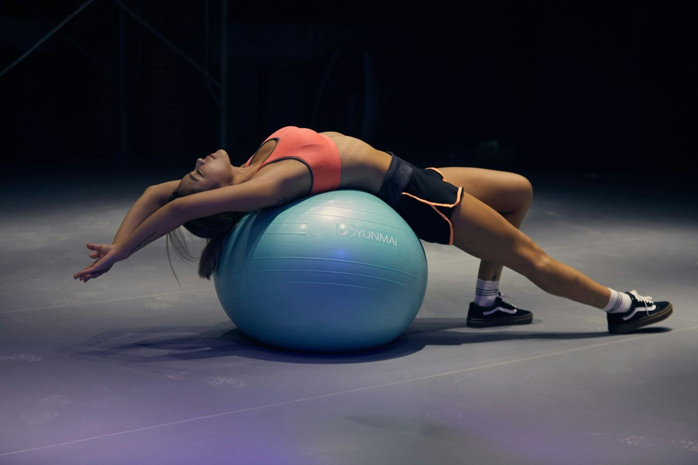

Ailenin her bireyi için hareket ve denge
Güven Plaza'da fizyoterapi, klinik pilates ve rehabilitasyon programları.



Tedavi alanları
Ağrının kaynağına yönelik, egzersiz temelli rehabilitasyon.
Bel ve boyun ağrısı
Fıtık, düzleşme ve kas spazmı kaynaklı ağrılar için egzersiz ve manuel terapi programı uygulanır.
Skolyoz ve postür
Omurga eğrilikleri ve duruş bozuklukları için kişiye özel egzersiz programları hazırlanır.
Klinik pilates
Fizyoterapist eşliğinde, ağrı ve postür odaklı kontrollü pilates seansları yapılır.
Ameliyat sonrası rehabilitasyon
Diz, kalça ve omuz ameliyatları sonrasında hareket açıklığı ve kuvvet adım adım geri kazandırılır.
Nörolojik rehabilitasyon
İnme ve sinir sistemi hastalıkları sonrasında denge, yürüme ve günlük yaşam becerileri çalışılır.
Lenf ödem ve masaj
Ödem ve dolaşım sorunlarında manuel lenf drenajı ve destekleyici yöntemler uygulanır.
Ağrınız nerede?
Bölgeyi seçin, size uygun olabilecek tedavi yaklaşımını görün.
Rehabilitasyon süreci
Değerlendirmeden ev programına kadar her adım planlı.
Değerlendirme
Ağrı, hareket açıklığı, kuvvet ve postür ayrıntılı olarak incelenir.
Tedavi planı
Şikayetinize ve günlük hayatınıza uygun seans sayısı ve yöntemler belirlenir.
Seanslar
Manuel terapi ve egzersizlerle her seans bir önceki üzerine kurulur.
Ev programı
Kazanımları korumanız için evde uygulayacağınız egzersizler öğretilir.
Size uygun bir saat bulalım
Formu doldurun ya da arayın, randevunuzu birlikte planlayalım.